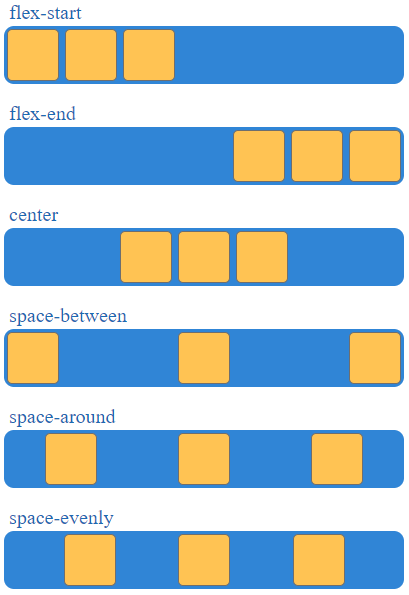
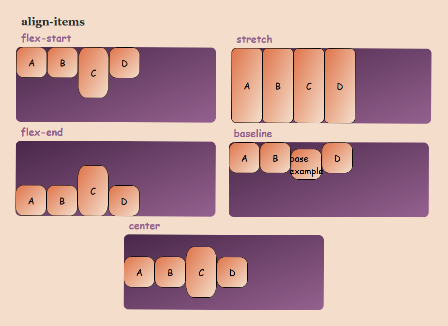

Flexbox (Flexible Box Layout) es un sistema de diseño en CSS que permite distribuir
y alinear elementos dentro de un contenedor de manera eficiente,
incluso si el tamaño de los elementos es dinámico o desconocido.
Es muy útil para crear interfaces adaptables y alineaciones complejas de manera sencilla.
Propiedades del contenedor flexible (flex-container):
Propiedad
Descripcion
display: flex
Activa el modelo de caja flexible en el contenedor.
flex-direction
Establece la dirección de los elementos hijos (row, row-reverse, column, column-reverse).
justify-content
Alinea los elementos a lo largo del eje principal. Por defecto stretch
align-items
Alinea los elementos a lo largo del eje transversal.
flex-wrap
Permite que los elementos se envuelvan en líneas adicionales (nowrap, wrap, wrap-reverse).
gap
Establece el espacio entre los elementos
Propiedades de los elementos flexibles (flex-item):
Propiedad
Descripcion
order
Cambia el orden de los elementos flexibles.
flex-grow
Define cuánto puede crecer un elemento en relación con los demás.
flex-shrink
Define cuánto puede encogerse un elemento si el espacio es limitado.
flex-basis
Establece el tamaño base inicial del elemento antes de aplicar flex-grow o flex-shrink.
align-self
Alinea un elemento individualmente a lo largo del eje transversal.
Ejemplos flex-direction
flex-direction: row
flex-direction: row-reverse
flex-direction: column
flex-direction: column-reverse
Ejemplos justify-content
Valor
Propiedad
flex-start
Los elementos se alinean al inicio del contenedor (por defecto).
flex-end
Los elementos se alinean al final del contenedor.
center
Los elementos se alinean en el centro del contenedor.
space-between
Los elementos se distribuyen con espacio igual entre ellos, dejando los bordes vacíos.
space-around
Los elementos se distribuyen con espacio igual alrededor de cada uno.
space-evenly
Los elementos se distribuyen con espacio completamente equitativo entre ellos y los bordes.

justify-content: flex-end
justify-content: center
justify-content: space-between
justify-content: space-around
justify-content: space-evenly
Ejemplos align-items
Alinea los elementos a lo largo del eje transversal.
Valor
Propiedad
flex-start
Los elementos se alinean al inicio del contenedor (por defecto, arriba si flex-direction es row).
flex-end
Los elementos se alinean al final del contenedor (abajo si flex-direction es row).
center
Los elementos se alinean al centro del contenedor.
baseline
Los elementos se alinean según su línea base. Esto es útil para alinear texto y otros elementos que pueden variar en altura.
stretch
Los elementos se estiran para llenar el contenedor. (Valor por defecto si las alturas no están definidas).

align-items: flex-start
align-items: flex-end
align-items: center
align-items: baseline
Ejemplos align-content
La propiedad align-content en CSS se usa para alinear las filas
dentro de un contenedor Flexbox cuando hay espacio extra en el eje
transversal (el eje perpendicular al eje principal). Esta propiedad
solo afecta cuando el contenedor tiene varias líneas de elementos,
es decir, cuando el contenido se envuelve debido a que no cabe en una sola línea.
Valor
Propiedad
flex-start
Las líneas de elementos se alinean al inicio del contenedor.
flex-end
Las líneas de elementos se alinean al final del contenedor.
center
Las líneas de elementos se alinean al centro del contenedor.
space-between
Las líneas de elementos se distribuyen con espacio igual entre ellas, dejando los bordes vacíos.
space-around
Las líneas de elementos se distribuyen con espacio igual alrededor de cada fila.
stretch
Las líneas de elementos se estiran para llenar todo el espacio disponible del contenedor. (Este es el valor por defecto)